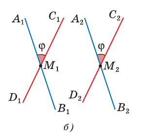

Теория
Третий случай
Если две прямые пересекаются — они лежат в одной плоскости (теорема 2, урок 1). Если параллельны — тоже (по определению). Но в пространстве прямые могут лежать так, что никакая плоскость не проходит через обе сразу.
Две прямые называются скрещивающимися, если они не лежат в одной плоскости.


| Случай | Общие точки | Одна плоскость? |
|---|---|---|
| Пересекаются | ровно одна | да |
| Параллельны | ни одной | да |
| Скрещиваются | ни одной | нет |
Если одна прямая лежит в плоскости, а другая пересекает эту плоскость в точке, не лежащей на первой прямой, то эти прямые скрещивающиеся.

Допустим противное: прямые AB и CD лежат в одной плоскости β. Тогда β проходит через прямую AB и точку C, не лежащую на ней. Но через прямую и точку вне её плоскость единственна (теорема 1, урок 1), и такая плоскость уже есть — это α. Значит, β = α. Но тогда и прямая CD лежала бы в α, а по условию она её пересекает. Противоречие. ∎
Через каждую из двух скрещивающихся прямых проходит плоскость, параллельная другой прямой, и притом только одна.

Существование. Через точку A проведём прямую AE ∥ CD (теорема о параллельных прямых). Прямые AB и AE пересекаются в A, через них проходит плоскость α (теорема 2, урок 1). Прямая CD в α не лежит и параллельна прямой AE ⊂ α, значит, по признаку прошлого урока CD ∥ α.
Единственность. Любая другая плоскость через AB пересекает прямую AE, а значит, по лемме пересекает и параллельную ей CD — параллельной она уже не будет. ∎
Углы с сонаправленными сторонами
Этот пункт нужен, чтобы корректно определить угол между скрещивающимися прямыми.
Лучи OA и O₁A₁, не лежащие на одной прямой, называются сонаправленными, если они параллельны и лежат в одной полуплоскости с границей OO₁. Проще: они параллельны и «смотрят в одну сторону».

Если стороны двух углов соответственно сонаправлены, то такие углы равны.
Пусть углы O и O₁ лежат в разных плоскостях. Отложим O₁A₁ = OA и O₁B₁ = OB.
Лучи OA и O₁A₁ сонаправлены и отрезки равны ⟹ OAA₁O₁ — параллелограмм, значит AA₁ ∥ OO₁ и AA₁ = OO₁. Так же BB₁ ∥ OO₁ и BB₁ = OO₁.
Отсюда AA₁ ∥ BB₁ (теорема о трёх прямых) и AA₁ = BB₁, то есть ABB₁A₁ — параллелограмм, и AB = A₁B₁.
Треугольники AOB и A₁O₁B₁ равны по трём сторонам ⟹ ∠O = ∠O₁. ∎
Угол между прямыми
Для пересекающихся прямых угол — это наименьший из четырёх образовавшихся углов. Поэтому всегда 0° < φ ≤ 90°.
Пусть AB и CD скрещиваются. Возьмём произвольную точку M₁ и проведём через неё A₁B₁ ∥ AB и C₁D₁ ∥ CD. Угол между этими пересекающимися прямыми и называется углом между скрещивающимися прямыми AB и CD.

Почему это определение корректно? Возьмём другую точку M₂ и повторим построение. Тогда A₁B₁ ∥ A₂B₂ и C₁D₁ ∥ C₂D₂ (по теореме о трёх прямых). Стороны углов при M₁ и M₂ попарно сонаправлены, значит, по только что доказанной теореме углы равны. Результат не зависит от выбора точки.

Углы в кубе
Возьмите куб ABCDA₁B₁C₁D₁ и прогоните четыре пары. Это лучший тренажёр на перенос прямой.
| Пара прямых | Что переносим | Угол |
|---|---|---|
| AB и B₁C₁ | B₁C₁ → BC | 90° |
| AB и A₁C₁ | A₁C₁ → AC (диагональ грани) | 45° |
| AD₁ и DC₁ | обе — диагонали граней, сходятся в правильном треугольнике | 60° |
| AB и DB₁ | DB₁ — диагональ куба | ≈ 54,7° |
GeoGebra
Опыт 1. Проверить, скрещиваются ли прямые
- A=(0,0,0)
- B=(4,0,0)
- C=(1,3,0)
- D=(2,1,3)
- a=Line(A,B)
первая прямая - b=Line(C,D)
вторая прямая - p=Plane(a,b)
если прямые скрещиваются — команда не даст плоскость (undefined)
Это машинная проверка определения. Команда Plane(a,b) строит плоскость, только если прямые лежат в одной плоскости. Пусто — значит, скрещиваются. Подвинь точку D в плоскость z = 0 — и плоскость сразу появится.
Опыт 2. Угол между скрещивающимися прямыми
- c=Cube((0,0,0),(4,0,0),(0,4,0))
куб с ребром 4 - Angle(Line(A,B),Line(B₁,C₁))
или просто Angle(a,b) для двух построенных прямых
В 3D-окне GeoGebra удобнее так: постройте куб командой Cube, затем через Segment выделите нужные рёбра и диагонали, а угол считайте командой Angle(<объект>, <объект>). GeoGebra сама переносит прямые — ответ сверяйте с таблицей выше.
Опыт 3. Плоскость через одну из скрещивающихся прямых
- E=A+Vector(C,D)
сдвигаем точку A на вектор CD - al=Plane(A,B,E)
плоскость через a, параллельная b - Distance(C,al)=Distance(D,al)
проверка: прямая b всюду на одном расстоянии
Задачи урока
Задачи № 34–47 из учебника Атанасяна. Решай с обоснованием: на каждый шаг — ссылка на аксиому, теорему или признак.
Домашнее задание
№ 39, 41, 45, 46 письменно. Устно: назвать три случая расположения прямых и признак скрещивающихся; найти в комнате три пары скрещивающихся прямых.